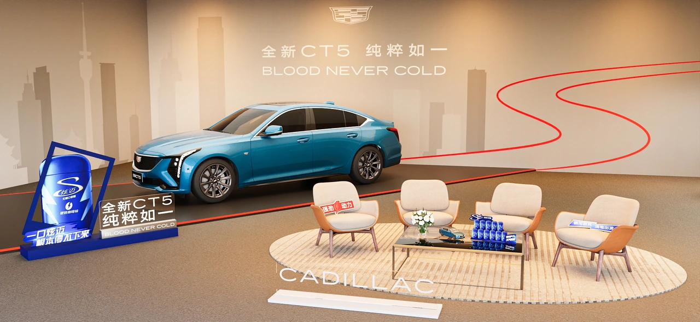
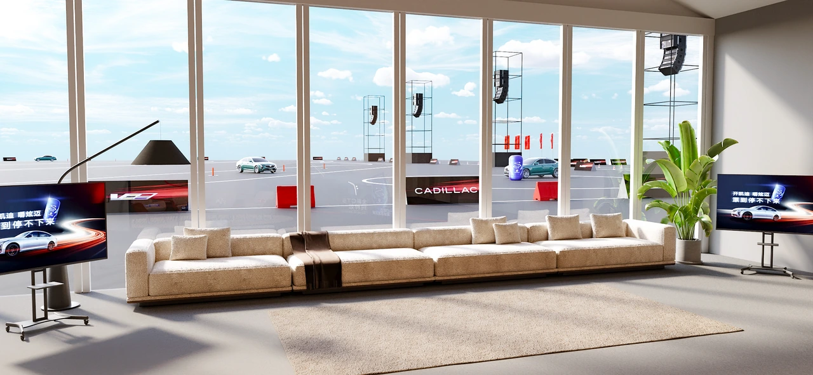
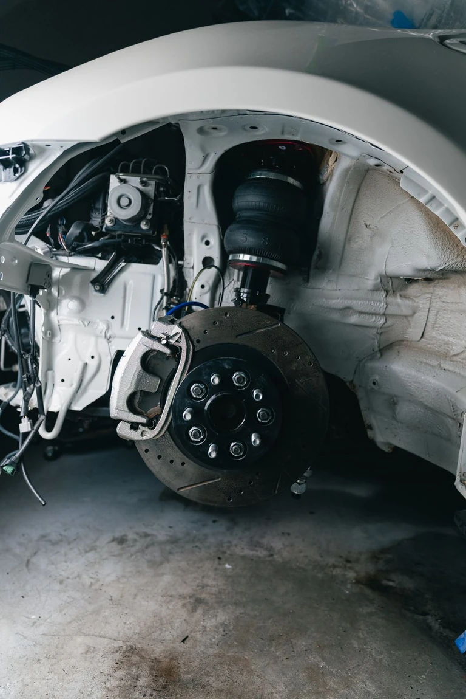

本地预览
西安 V Academy 试驾学院
CADILLAC · 试驾活动 · 2025
试驾学院的展车、底盘展示、观摩与休息区域。

场地与展示
轮组和底盘放在低台上，浅色墙面留出构件轮廓。观摩区改用面向屏幕的一排排座椅，沿窗的休息位则保留横向视野。




照片把轮侧的弹簧、支臂和连接点直接留给观众看。原作把底盘与轮组摆在低台，同样便于从近处读构件之间的关系。
Erik Mclean · Pexels 许可